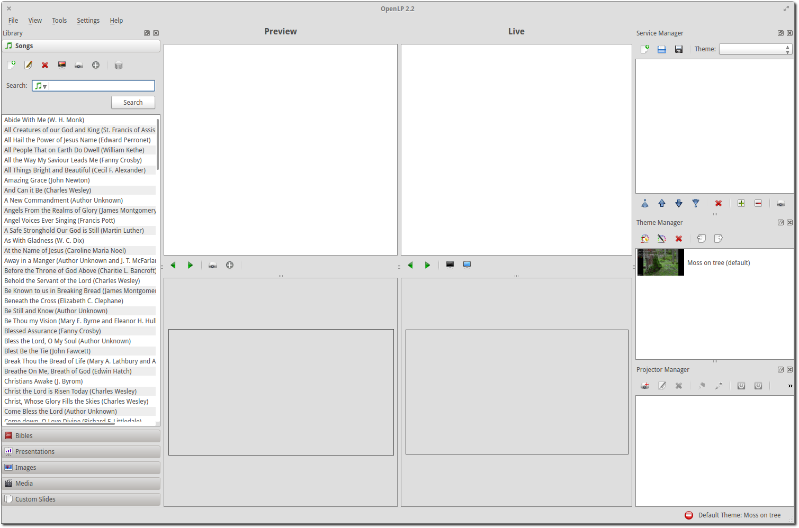
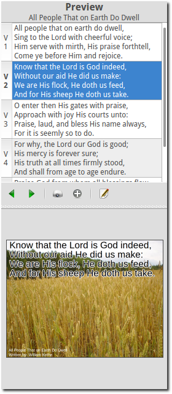
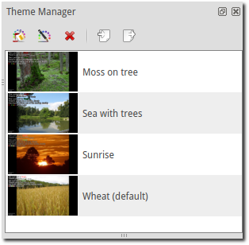
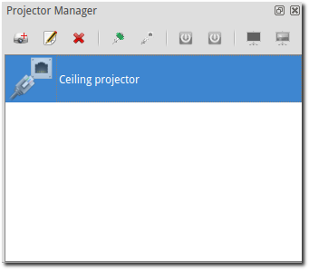

Glossary
The developers of OpenLP have strived to make it a straightforward and easy to use application. However, it is good to be familiar with a few terms that will be used throughout this documentation, and when seeking support.
First Time Wizard
The First Time Wizard gives you the ability to perform a basic setup of OpenLP. It runs automatically before OpenLP starts for the first time. The First Time Wizard can be run again if needed.
Formatting Tags
Formatting Tags give you the ability to add additional text formatting to text in songs and custom slides.
Main Window
The Main Window is what you will see when you first open OpenLP. It contains all the tools and plugins that make OpenLP function.
Media Manager
The Media Manager contains a number of tabs which the plugins supply to OpenLP. Each tab in the Media Manager is called a Media Item. You can send songs, Bibles, etc from the Media Item to the Preview Slide Controller or Live Slide Controller.

Media Item
A media item is a tab in the Media Manager. The media item contains any items from the various plugins which can be displayed on the display screen.
Platform
When the word “platform” is used, it is usually referring to your operating system, Windows, Linux, (Mac) OS X or FreeBSD/PC-BSD.
Preview Pane
The preview pane is a section to preview your media items before you go live with them.
Service File
A service file is the file that is created when you save your service in OpenLP. The service file consist of Service Items
Service Items
Service items are the Media Item that are in the Service Manager.
Service Manager
The service manager contains the media items in your service file. This is the area where your media items go live. You can also save, open, and edit services files from here.

Slide Controller
The Slide Controller controls which slide from a Service Items is currently being displayed, and moving between the various slides.

Preview Slide Controller
The preview Slide Controller shows you a simple preview of your item. It does not send any output to the display screen.
Live Slide Controller
The live Slide Controller controls the live output to the display screen.
Theme Manager
The theme manager is where themes are created and edited. Themes are the text styles and backgrounds that you use to personalize your services.
Projector Manager
The Projector Manager is where you can manage and control projectors.
